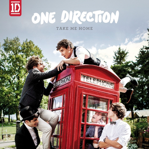

One Direction, often shortened to 1D, are an English-Irish pop boy band formed in London, England in
2010. The group are composed of Niall Horan, Liam Payne, Harry Styles and Louis Tomlinson; former member
Zayn Malik departed from the group in March 2015. The group signed with Simon Cowell's record label Syco
Records after forming and finishing third in the seventh series of the British televised singing
competition The X Factor in 2010.
Propelled to global success by social media, One Direction's five albums, Up All Night (2011),
Take Me Home (2012), Midnight Memories (2013), Four (2014), and Made in the A.M. (2015), topped charts
in most major markets, and generated hit singles including "What Makes You Beautiful" (their first
number one on the UK Singles Chart, and the highest debut for a British act on the US Billboard Hot 100
since 1998), "Live While We're Young", "Best Song Ever", "Story of My Life" and "Drag Me Down". After
the release of Four, One Direction became the first band in the US Billboard 200 history to have their
first four albums debut at number one. Their third album, Midnight Memories, was the best-selling
album worldwide of 2013.
Considered teen idols, One Direction were often subject to fan hysteria. They embarked on four
world tours, two of which were all-stadium. The band's Where We Are Tour, in support of Midnight
Memories, was the highest-grossing concert tour in 2014, the highest-grossing tour by a vocal group in
history, and the 15th highest-grossing concert tour of all time, grossing $290.2 million (unadjusted for
inflation). The band went on hiatus in January 2016, allowing all members to pursue other
projects.
As of 2020, the band have sold a total of 70 million records worldwide, making them one of the
best-selling boy bands of all time. The band have won nearly 200 awards, including seven Brit
Awards, four MTV Video Music Awards, six Billboard Music Awards, seven American Music Awards (including
Artist of the Year in 2014 and 2015), and 28 Teen Choice Awards. In 2013, they earned an estimated $75
million, becoming the second highest earning celebrity under 30 according to Forbes. As the world's
best-selling artist of 2013, the group was named the Global Recording Artist of the Year by the
International Federation of the Phonographic Industry. In 2014, Billboard named the band "Artist of
the Year". Forbes ranked them as the fourth highest-earning celebrities in the world in
2015, and second in 2016.

Harry Edward Styles (born 1 February 1994) is an English singer, songwriter, and actor. His
musical
career began in 2010 as a solo contestant on the British music competition series The X Factor.
Following his elimination early on, he was brought back to join the boy band One Direction, which
went on to become one of the best-selling boy bands of all time.
Throughout his career,
Styles has earned several accolades, including two Brit Awards, a Grammy Award and an American Music
Award. Aside from music, he is also known for his flamboyant fashion, and is the first man to appear
solo on the cover of Vogue magazine.
Louis William Tomlinson (born Louis Troy Austin; 24 December 1991) is an
English singer and songwriter. He rose to fame as a member of the boy band One Direction. He began
his career appearing in television dramas before he auditioned on the British music competition
series The X Factor In 2010. After being eliminated as a solo performer, he was put into a group
with four other contestants, forming One Direction, which went on to become one of the best-selling
boy bands of all time.
In 2018 Tomlinson appeared on the fifteenth series of The X Factor as
a
judge and a mentor of the "Boys" category. He became the first former contestant of the show to
become the winning mentor due to his mentee Dalton Harris winning the show. The following year
Tomlinson released the singles "Two of Us", "Kill My Mind", "We Made It", "Don't Let It Break Your
Heart" and "Walls", preceding his debut album Walls, released in January 2020.
Liam James Payne (born 29 August 1993) is an English singer and songwriter. He rose to fame as a member of the boy band One Direction. Payne made his debut as a singer in 2008 when he auditioned for the British television series The X Factor. After being eliminated in the competition, he auditioned again in 2010 and was put into a group with four other contestants to form One Direction, which went on to become one of the best-selling boy bands of all time.
Niall James Horan (born 13 September 1993) is an Irish singer and songwriter. He rose to prominence as a member of the boy band One Direction, formed in 2010 on the British singing competition The X Factor. The group released five albums and went on to become one of the best-selling boy bands of all time. Following the band's hiatus in 2016, Horan signed a recording deal as a solo artist with Capitol Records.

Zain Javadd Malik (born 12 January 1993), known mononymously as Zayn, is an English singer
and songwriter. Born and raised in Bradford, Malik auditioned as a solo contestant for the British
music competition The X Factor in 2010. After being eliminated as a solo performer, Malik was
brought back into the competition, along with four other contestants, to form the boy band One
Direction, which went on to become one of the best-selling boy bands of all time. Malik left the
group in March 2015 and subsequently signed a solo recording contract with RCA Records.
Malik
is the recipient of several accolades, including an American Music Award and a MTV Video Music
Award. He is also the only artist to have won the Billboard Music Award for New Artist of the Year
twice, receiving it once as a member of One Direction in 2013 and then again in 2017 as a solo
artist.

Upp All Night
listen to it Take Me Home
listen to it.png)

.png)